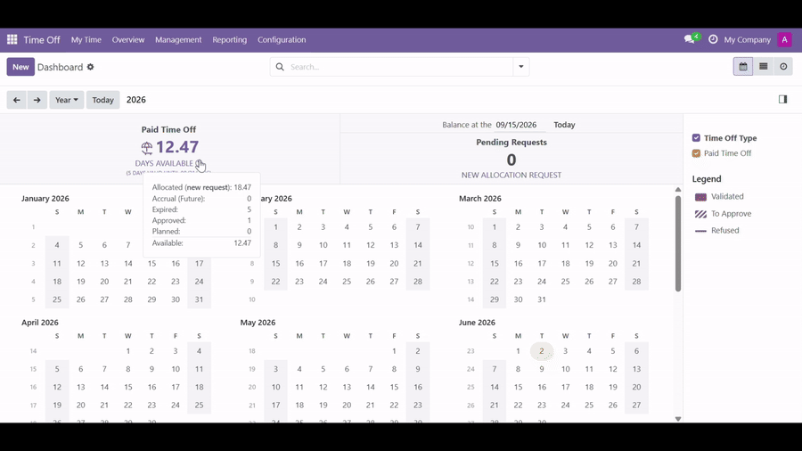
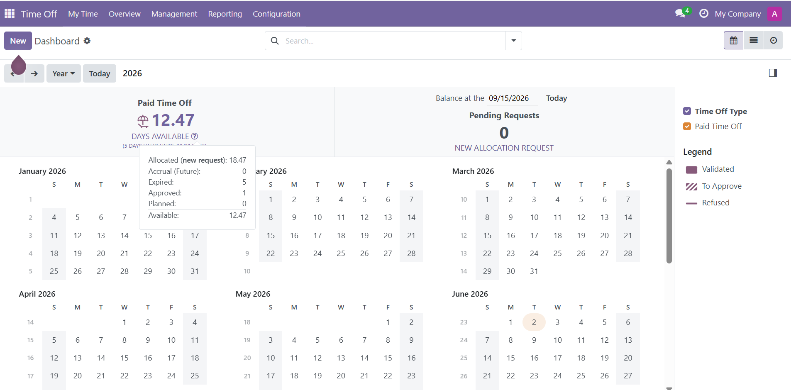
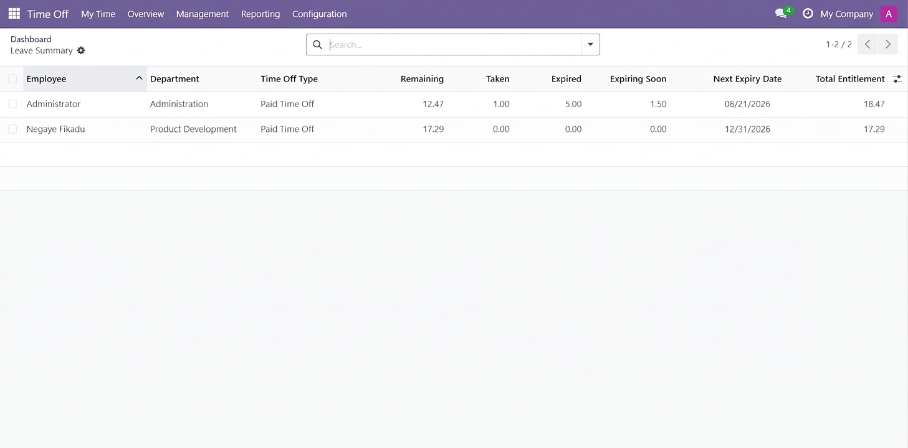
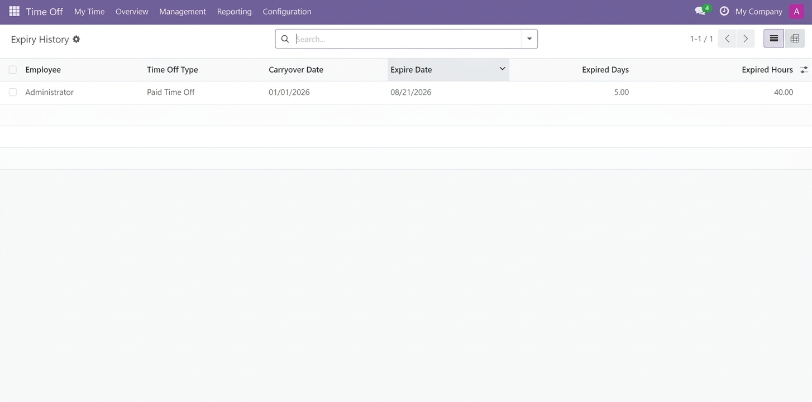

Odoo 18 • Time Off

Leave Summary provides a clear view of employee leave balances in Odoo 18, bringing allocated, taken, remaining, and expired leave together in one place.
Odoo 18 continues to handle accruals, carryover, validity, and expiry using its native Time Off functionality. This module complements that process by recording relevant expiry events and making them easier to review and analyze.
It provides HR users with a practical reporting and visibility layer without replacing Odoo's standard accrual mechanism.
Everything you need to understand leave balances and expiry.
View allocated, taken, remaining, and expired leave in one clear summary for employees and leave types.
Keep a dedicated history of accrual leave that has expired, including the employee, leave type, allocation, expiry date, and expired days.
Analyze leave information as of a selected date for clearer historical balance and expiry analysis.
Link expiry records to their originating allocations for a clear audit trail.
Make expiry information easier to understand alongside standard Time Off balances.
Analyze expiry history by employee, leave type, department, and date using Odoo reporting views.
Odoo calculates. Leave Summary makes it visible.
Configure accrual validity and carryover using Odoo's standard Accrual Plans.
Odoo applies the configured accrual, carryover, validity, and expiry rules.
Leave Summary records relevant expiry events and provides clear reporting and historical visibility.
Explore the main reporting and visibility features.



Works with Odoo's standard Time Off functionality rather than replacing it.
✓ It does not replace Odoo's accrual calculation.
✓ It does not implement a separate expiry engine.
✓ It does not override Odoo's native leave consumption logic.
✓ It does not introduce separate expiry rules.
✓ It does not modify the configured accrual plan logic.
Odoo 18 Community Edition
Requires Time Off (hr_holidays)